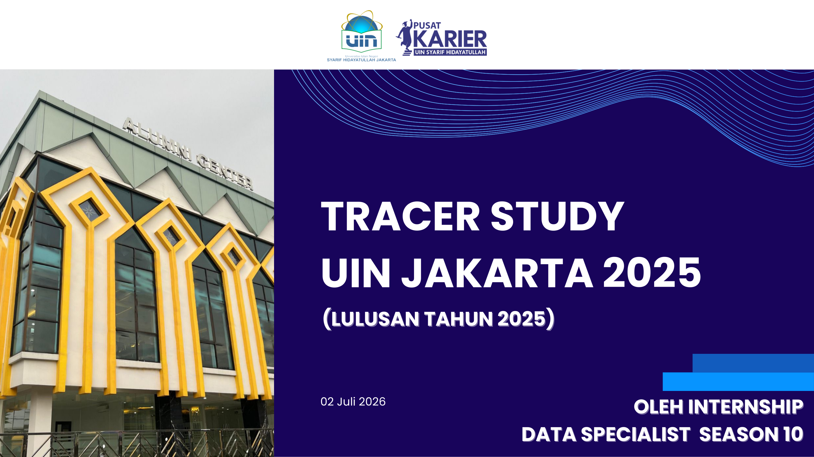
Official executive reporting presentation delivered to university leadership, vice rectors, and faculty deans. Click to expand full-resolution view.
The Tracer Study UIN Syarif Hidayatullah Jakarta is the flagship institutional research initiative conducted by the university's Career Center (Pusat Karier) to track the transition of university alumni from higher education into the professional labor market. As the Leader of Data Specialist, I led a specialized team of 10 data specialists responsible for end-to-end data acquisition, formula validation, quality control, demographic segmentation, and executive reporting across 13 faculties.
Covering four consecutive graduation cohorts (Wisuda 135 through Wisuda 138) with a total population of 7,530 graduates, our survey yielded 3,862 verified respondents—achieving an exceptional 51.25% response rate. The resulting findings serve as critical benchmarks for national accreditation (BAN-PT), curriculum development, international university rankings, and strategic policy formulation by the university rectorate.
Through rigorous statistical aggregation and multi-dimensional cross-tabulation, our analysis mapped the holistic post-graduation journeys of UIN Jakarta alumni across multiple primary indicators:
A cornerstone of the Tracer Study is assessing curriculum effectiveness by evaluating the gap between competencies mastered at graduation versus competencies demanded in the workplace. Alumni rated their proficiency across 10 vital domains on a standardized Likert scale:
The analysis revealed highest graduate mastery in Communication Skills (mean 4.66 / 5.00) and Self-Development & Adaptability (mean 4.64 / 5.00), followed closely by Teamwork (4.60) and Work Ethics (4.58). Conversely, the largest competency gaps requiring curriculum reinforcement were identified in Foreign Language Fluency (English) and Specialized Information Technology & Technical Tools.
These quantitative insights provided actionable empirical evidence for faculty deans to update course syllabi, embed industry certification requirements, and expand technical training modules.
Collecting and validating information from thousands of respondents across heterogeneous faculty cohorts presented substantial data quality challenges:
1. Automated Spreadsheet Validation: Engineered centralized Google Sheets and Microsoft Excel systems utilizing QUERY, IMPORTRANGE, VLOOKUP, INDEX/MATCH, and automated data-type validation rules.
2. Sanitization of Free-Text Fields: Standardized messy textual responses—such as unformatted salary inputs, varied company naming conventions, and ambiguous job titles—into standardized analytical categories.
3. Deduplication & Integrity Controls: Filtered duplicate student ID (NIM) submissions, resolved missing data through targeted follow-ups, and instituted conditional formatting verification protocols for our 10-person specialist team.
Click on any slide from the executive report below to inspect the detailed visual charts, distribution graphs, and statistical tables:
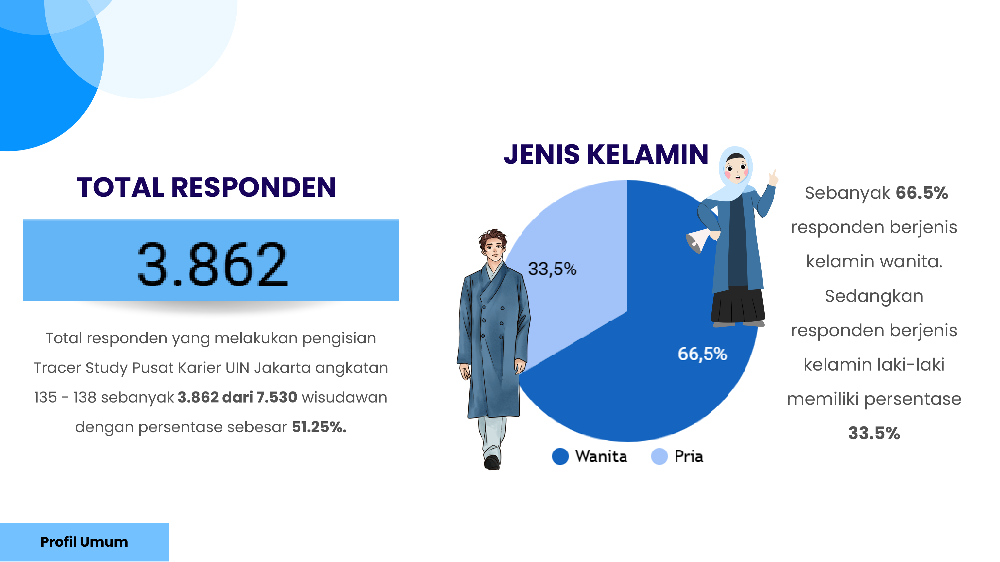
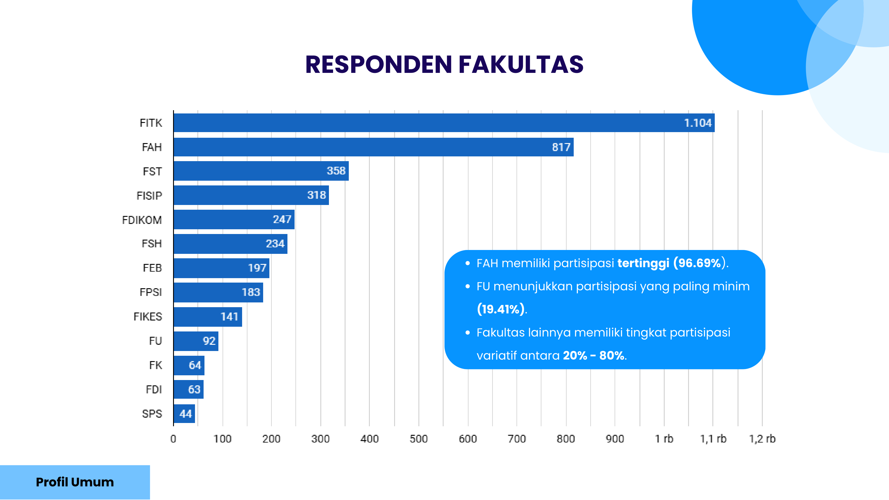
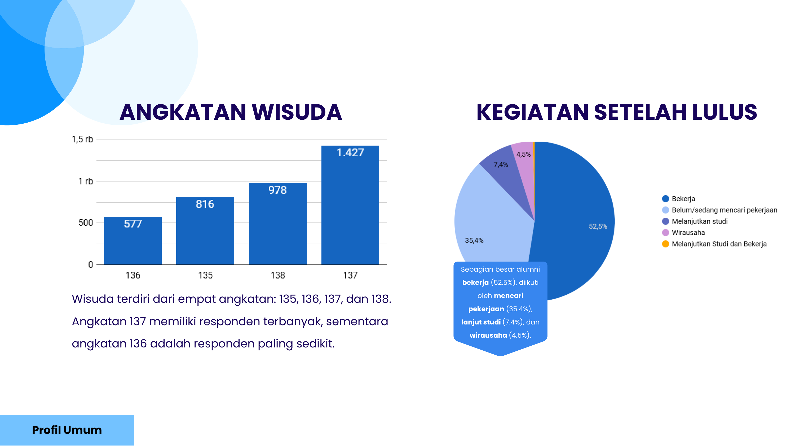
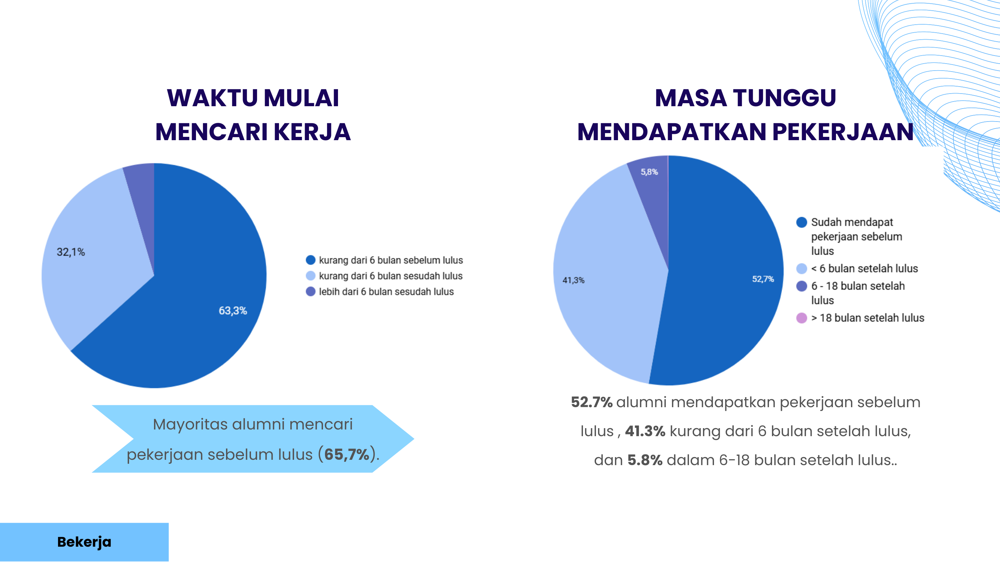
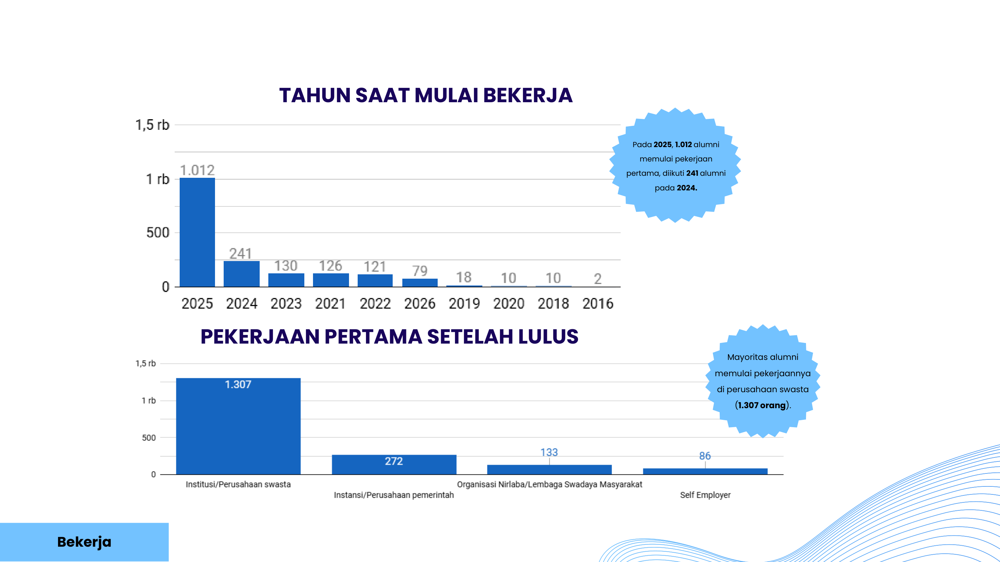
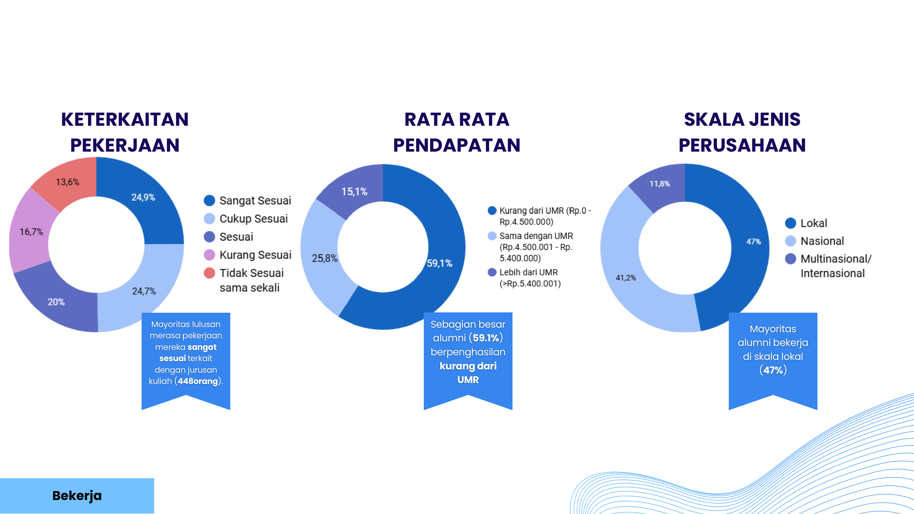
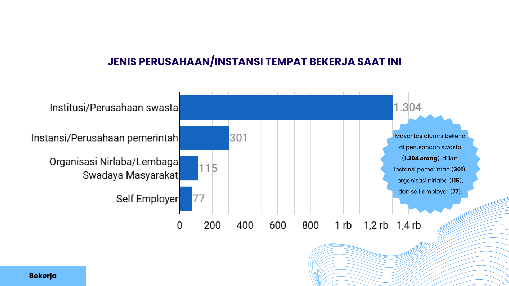
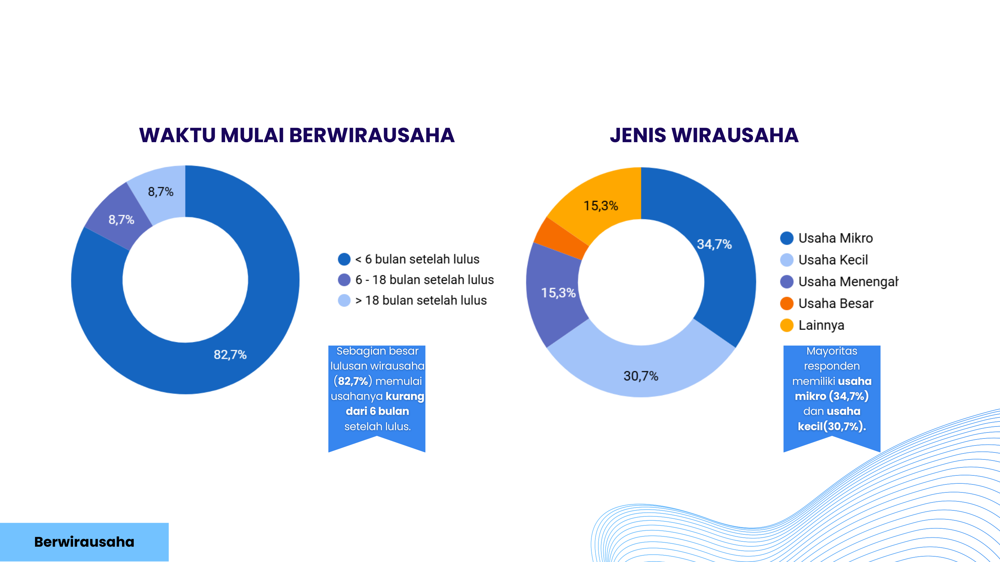
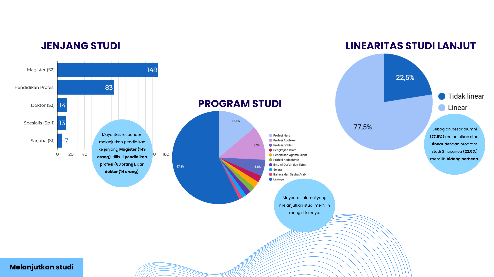
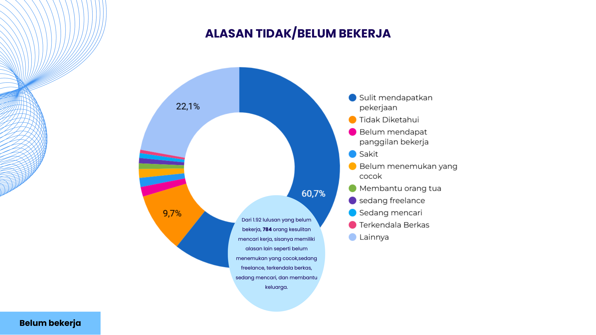
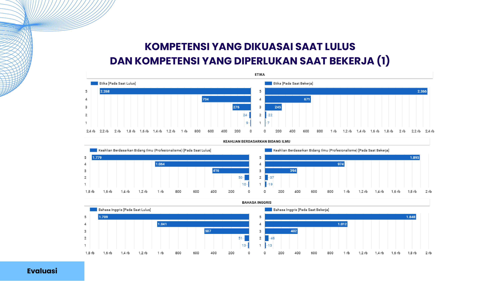
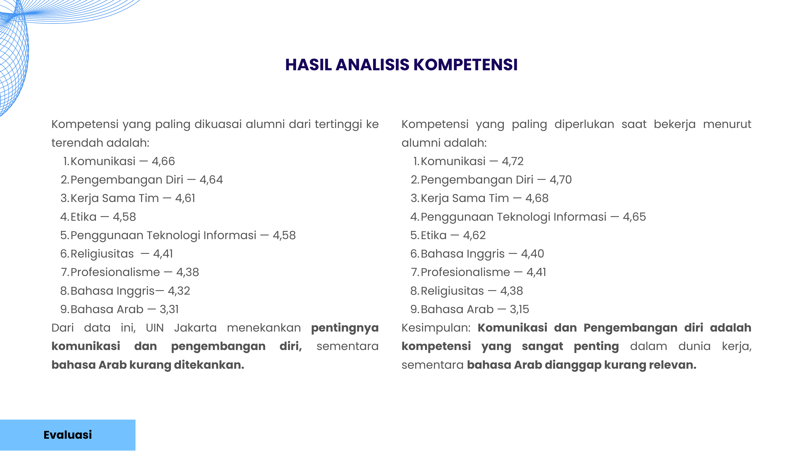
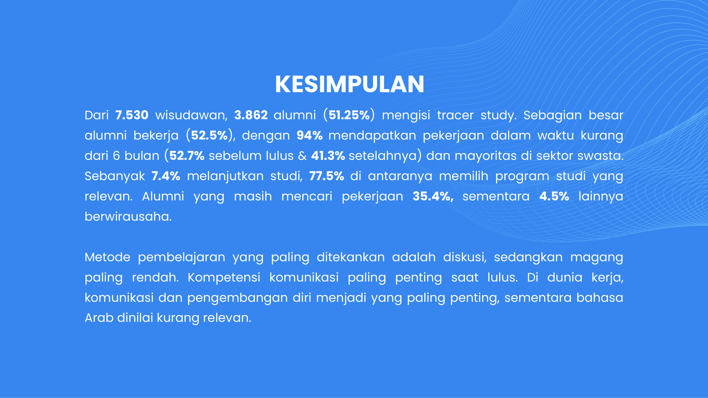
Discover more about my operational leadership, 10-person specialist team management, and daily workflows at Pusat Karier.
View Work Experience Page →Let's discuss survey intelligence, automated validation pipelines, and high-impact executive decision reporting.